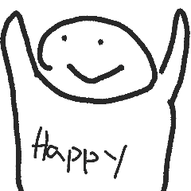

.music-icon {
    padding-right: 10px;
    transition: transform 0.2s ease-in-out;
}

.music-icon:hover {
    transform: scale(1.2);
}

.jumbotron h1 {
    animation: pop-out 1s ease-out forwards;
}

@keyframes pop-out {
    0% {
        transform: translateY(-100%);
    }
    50% {
        transform: translateY(20%);
    }
    100% {
        transform: translateY(0%);
    }
}

.jumbotron h1 {
    animation: pop-out 1s ease-out forwards, jiggle 0.5s ease-in-out 0.5s infinite alternate;
}

@keyframes jiggle {
    0% {
        transform: rotate(0deg);
    }
    100% {
        transform: rotate(5deg);
    }
}

.border {
    border-width: 8px;
    border-color: #333;
}

.terminal-style {
    font-family: monospace;
    font-size: medium;
    color: #0ff;
    background-color: #000;
    padding: 20px;
    border-radius: 10px;
    overflow-wrap: break-word;
}   </nav>

    <!-- Jumbotron -->
    <div class="jumbotron jumbotron-fluid">
        <div class="container">
            <h1 class="display-4">Hello, World!</h1>
            <p class="lead">
                Welcome to my website! <br />

            </p>
        </div>
    </div>

    <!-- About Section -->
    <section id="about" class="bg-light">
        <div class="container">
            <div class="row">
                <div class="col-lg-12 text-center">
                    <h2>About</h2>
                    <hr />
                </div>
            </div>
            <div class="row">
                <div class="col-lg-4">
                    
                </div>
                <div class="col-lg-8">
                    <p class="terminal-style">

                    </p>
                </div>

            </div>
        </div>
    </section>
    <script>
        let text = " I am currently studying Computing at The Hong Kong Polytechnic University. I have a passion for using technology to solve problems and improve the world around us  I enjoy learning about new technologies and experimenting with them in my projects";
        let i = 0;
        let speed = 20;

        function typeOut() {
            if (i < text.length) {
                document.querySelector(".terminal-style").innerHTML += text.charAt(i);
                i++;
                setTimeout(typeOut, speed);
            }
        }

        typeOut();
    </script>
    <!-- Footer -->
    <!-- Footer -->
    <footer class="py-5 bg-dark">
        <div class="container">
            <div class="row">
                <div class="col-lg-12 text-center text-white">
                    <h2>Socials</h2>
                </div>
                <div class="col-lg-12 text-center text-white py-3">
                    
                    
                    
                    
                </div>
                <div class="col-lg-12 text-center text-white">
                    <h2>Contact</h2>
                </div>
                <div class="col-lg-12 text-center text-white">
                    <a href="mailto:21028949d@connect.polyu.hk">21028949d@connect.polyu.hk</a>
                </div>
                <div class="col-lg-12 text-center text-white">
                    <p>&copy; 2023 Elvis Yeung. Stay hype!</p>
                </div>
            </div>
        </div>
    </footer>